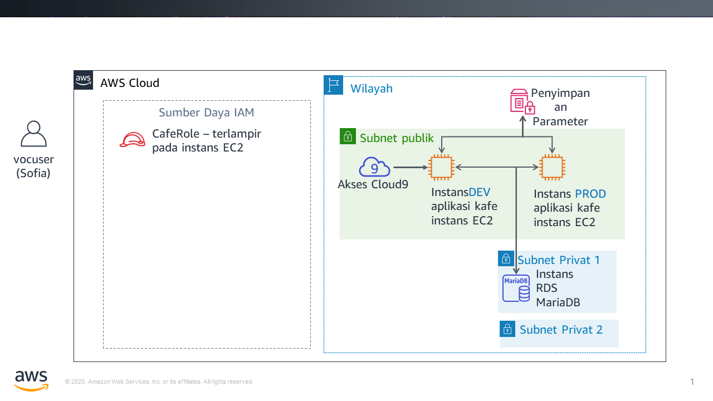
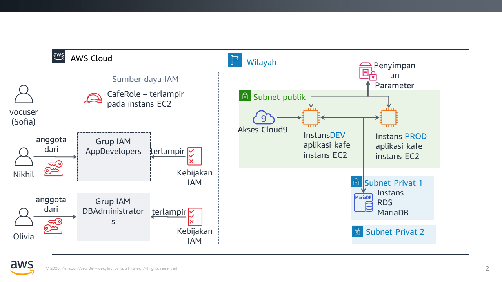
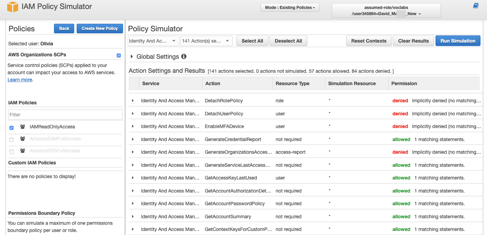

Modul 8 — Lab Tantangan: Mengontrol Akses Akun AWS dengan Menggunakan IAM
Skenario
Setelah berbicara dengan Mateo tentang infrastruktur AWS kafe, Sofía menyadari bahwa ia harus mengatasi beberapa masalah keamanan dasar tentang cara staf kafe menggunakan akun AWS.
Kafe ini sekarang cukup besar sehingga anggota tim yang membangun, memelihara, atau mengakses aplikasi di AWS mengkhususkan diri ke dalam peranan tertentu (seperti developer atau administrator basis data). Hingga saat ini, mereka belum berusaha untuk secara jelas menentukan tingkat akses yang harus dimiliki setiap pengguna berdasarkan peran dan tanggung jawab mereka.
Sofía menghabiskan beberapa waktu memikirkan apa yang harus dilakukan setiap orang di akun, terutama dengan AWS Cloud9, Amazon Elastic Compute Cloud (Amazon EC2), dan Amazon Relational Database Service (Amazon RDS). Dia membuat beberapa keputusan dan membuat grafik ini, yang menjelaskan bagaimana dia ingin menentukan hak akses di akun AWS:
| Grup IAM | Pengguna IAM | Akses layanan AWS | Alasan |
|---|---|---|---|
| AppDevelopers | Nikhil | Akses AWS Cloud9 ke lingkungan pengembangan Amazon EC2. Selain itu, akses hanya-baca ke Amazon EC2. | Nikhil sering bekerja sebagai developer aplikasi. Ia seharusnya dapat mengakses lingkungan AWS Cloud9 untuk pengembangan aplikasi web kafe. Namun, ia seharusnya tidak memiliki akses ke lingkungan produksi. Dia juga seharusnya dapat melihat semua sumber daya Amazon EC2 dan detail konfigurasi, tetapi dia seharusnya tidak dapat memodifikasinya. |
| DBAdministrators | Olivia | Akses penuh ke Amazon RDS. Selain itu, akses penuh ke AWS Systems Manager. | Olivia dipekerjakan sebagai administrator basis data kontrak untuk membantu mengelola basis data yang digunakan aplikasi web kafe. Oleh karena itu, dia harus memiliki hak akses penuh ke Amazon RDS. Dia juga akan membutuhkan akses ke AWS Systems Manager, tempat informasi koneksi basis data disimpan. Namun, di luar akses ke dua layanan ini, Sofía tidak tahu alasan lain mengapa Olivia perlu lebih banyak akses ke sumber daya AWS. |
Perhatikan bahwa alih-alih menetapkan izin langsung ke pengguna, Sofía memutuskan untuk menentukan grup IAM. Selanjutnya, dia akan melampirkan kebijakan IAM yang memberikan akses ke grup tersebut. Kemudian, dia berencana untuk menetapkan pengguna ke kelompok yang sesuai. Jika kafe mempekerjakan lebih banyak developer atau administrator basis data, ia dapat menambahkannya sebagai pengguna baru ke grup. Pengguna baru akan menerima izin yang tepat untuk peran mereka dalam mengembangkan dan memelihara infrastruktur akun AWS. Pendekatan ini akan disesuaikan seiring dengan perkembangan kafe.
Setelah Sofía tahu hak akses apa yang ingin dia berikan kepada pengguna yang mana, dia siap untuk memulai!
Gambaran umum dan tujuan lab
Di lab ini, Anda akan menggunakan AWS Identity and Access Management (IAM) untuk menentukan hak akses yang berbeda untuk pengguna yang berbeda. Anda akan menguji akses dan menyesuaikan akses. Anda juga akan mengamati bagaimana hak akses yang Anda berikan memengaruhi tindakan apa yang dapat dilakukan pengguna IAM pada sumber daya akun AWS.
Setelah menyelesaikan lab ini, Anda akan mampu:
- Membuat pengguna IAM dan grup IAM, serta mengaitkan kebijakan IAM dengan grup IAM
- Menunjukkan bagaimana hak akses terbatas memengaruhi sumber daya yang dapat diakses oleh pengguna IAM dan tindakan apa yang dapat mereka ambil
- Menggunakan kebijakan-kebijakan IAM yang dikelola AWS untuk mengubah hak akses pengguna dan mengamati hasil
- Menggunakan Simulator Kebijakan IAM untuk mengamati cakupan akses yang diberikan oleh kebijakan yang berbeda
- Mengakses IAM Access Advisor untuk mengamati hak akses apa yang dimanfaatkan oleh pengguna yang berbeda
- Membuat kebijakan IAM kustom dengan menggunakan editor visual
Ketika Anda memulai lab, sumber daya berikut sudah dibuat untuk Anda di akun AWS:

Pada akhir lab ini, arsitektur Anda akan mencakup sumber daya dan konfigurasi berikut:

Durasi
Diperlukan waktu sekitar 80 menit untuk menyelesaikan lab ini.
Pembatasan layanan AWS
Dalam lingkungan lab ini, akses ke layanan AWS dan tindakan layanan mungkin dibatasi untuk orang-orang yang diperlukan untuk menyelesaikan instruksi lab. Anda mungkin akan mengalami error jika mencoba mengakses layanan lain atau melakukan tindakan di luar yang dijelaskan di lab ini.
Mengakses Konsol Manajemen AWS
Di bagian atas instruksi ini, pilih Start Lab (Mulai Lab) untuk meluncurkan lab Anda.
Panel Start Lab (Mulai Lab) terbuka dan menampilkan status lab.
Tip: Jika Anda memerlukan lebih banyak waktu untuk menyelesaikan lab daripada yang ditampilkan pada pengatur waktu, pilih tombol Start Lab (Mulai Lab) lagi untuk memulai ulang pengatur waktu untuk lingkungan. Melakukan hal tersebut tidak akan menghapus sumber daya yang telah Anda buat.
- Tunggu hingga Anda melihat pesan Lab status: ready (Status lab: siap), lalu tutup panel Start Lab (Mulai Lab) dengan memilih X.
Di bagian atas instruksi ini, pilih AWS.
Tindakan ini akan membuka Konsol Manajemen AWS di tab browser baru. Anda akan login ke sistem secara otomatis.
Tip: Jika tab browser baru tidak terbuka, banner atau ikon biasanya berada di bagian atas browser Anda dengan pesan bahwa browser Anda mencegah situs membuka jendela sembulan. Pilih banner atau ikon, lalu pilih Allow pop-ups (Izinkan sembulan).
Atur tab AWS Management Console (Konsol Manajemen AWS) agar ditampilkan bersama instruksi ini. Idealnya, Anda perlu membuka kedua tab browser secara bersamaan, sehingga Anda dapat mengikuti langkah-langkah lab dengan lebih mudah.
Catatan: Anda juga dapat menghapus centang pada kotak di samping Terminal di bagian atas layar, untuk menyembunyikannya dari tampilan.
Permintaan bisnis: Mengonfigurasi akses akun AWS untuk developer aplikasi (Tantangan #1)
Kafe ingin mengonfigurasi izin akses yang sesuai untuk developer aplikasi. Anda akan berperan sebagai Sofía untuk mengonfigurasi akses. Anda kemudian akan mengambil peran Nikhil dan menguji akses untuk developer aplikasi.
Tugas 1: Mengonfigurasi grup IAM dengan kebijakan dan pengguna IAM
Dalam tugas pertama ini di lab, Anda akan bekerja sebagai Sofía, administrator akun AWS.
Sebagai Sofía, Anda akan membuat grup IAM dan menetapkan kebijakan-kebijakan yang dikelola AWS pada grup. Anda kemudian akan membuat pengguna IAM baru, dan menambahkan pengguna tersebut sebagai anggota grup. Selanjutnya, Anda akan membuat lingkungan AWS Cloud9 pada instans EC2 yang ada tempat versi pengembangan dari aplikasi web kafe berjalan. Terakhir, Anda akan berbagi lingkungan pengembangan dengan pengguna baru.
Catatan: Pengguna yang Anda gunakan untuk login ditampilkan di area kanan atas halaman web. Saat ini akan terlihat bahwa Anda login sebagai pengguna voclab. Di lab ini, bayangkan bahwa pengguna voclab adalah Sofía.
- Di konsol, buka halaman layanan IAM.
Buat grup IAM bernama
AppDevelopers, dan pasang kebijakan IAM berikut ini pada grup tersebut:- AmazonEC2ReadOnlyAccess
- AWSCloud9EnvironmentMember
Buat pengguna IAM dan tambahkan pengguna ke grup AppDevelopers.
- User name (Nama pengguna):
Nikhil - Access type (Jenis akses): akses Konsol Manajemen AWS
- Custom password (Kata sandi kustom):
@ppD3veloper2020! - Require password reset (Wajibkan reset kata sandi): Hapus kotak centang ini
- Tambahkan Nikhil ke grup AppDevelopers
- Catatan: Anda tidak perlu menambahkan tag
- Pada layar Success (Sukses), Anda dapat secara opsional memilihDownload .csv (Unduh .csv) dan menyimpan file ke komputer
- Pilih Close (Tutup)
- User name (Nama pengguna):
Saat masih login sebagai pengguna voclab (Sofía), buat koneksi ke AWS Cloud9 IDE dan atur aplikasi web kafe.
Buka halaman layanan AWS Cloud9 dan di bawah DEVCafeServer, pilih Open IDE (Buka IDE).
AWS Cloud9 IDE yang berjalan pada instans EC2 akan muncul.
Pada jendela terminal Bash di bagian bawah layar, tempel dan jalankan ketiga perintah ini:
wget https://aws-tc-largeobjects.s3-us-west-2.amazonaws.com/ILT-TF-200-ACACAD-20-EN/mod8-challenge/install-cafe-app.shchmod +x install-cafe-app.sh./install-cafe-app.shCatatan: Anda tidak harus menunggu skrip selesai berjalan. Namun, lanjutkan ke langkah selanjutnya.
Bagikan lingkungan AWS Cloud9 dengan pengguna Nikhil.
Di pojok kanan atas AWS Cloud9 IDE, pilih Share (Bagikan).
Di panel Share this environment (Bagikan lingkungan ini), di bawah Invite Members (Undang Anggota), masukkan
Nikhil, dan pilih Invite (Undang).Pilih OK, pilih OK lagi, lalu pilih Done (Selesai).
Penting: Tutup tab browser AWS Cloud9 IDE, tapi biarkan setidaknya satu tab browser lain terbuka tempat Anda login di Konsol Manajemen AWS sebagai pengguna voclab (Sofía).
Tugas 2: Login sebagai Nikhil dan menguji akses
Dalam tugas ini, Anda akan bekerja sebagai Nikhil untuk menguji izin akses yang telah dikonfigurasi oleh Sofia.
Tip: Kami menyarankan untuk membuka tab browser samaran atau pribadi untuk masuk sebagai Nikhil.
- Misalnya, jika Anda menggunakan Chrome, pilih File > New Incognito Window (Jendela Samaran Baru). Jika Anda menggunakan Firefox, pilih File > New Private Window (Jendela Pribadi Baru).
- Atau, gunakan browser lain (misalnya, jika Anda menggunakan Chrome untuk menyelesaikan Tugas 1, gunakan Firefox, Edge, atau Safari untuk Tugas 2).
Catatan: Menggunakan sesi samaran, sesi pribadi, atau browser lain akan lebih memudahkan. Anda dapat tetap login sebagai pengguna voclab dan sebagai pengguna lain (seperti Nikhil) secara bersamaan. Dengan demikian, Anda dapat beralih antara dua tingkat akses pengguna ini tanpa perlu keluar atau masuk berulang kali. Informasi sesi yang telah diautentikasi di tab browser yang berbeda akan diisolasi satu sama lain.
- Sebagai Nikhil, login ke Konsol Manajemen AWS.
Di tab browser tempat Anda masuk sebagai pengguna voclab (Sofía), buka konsol IAM, pilih Users (Pengguna), lalu pilih Nikhil.
Pilih tab Security credentials (kredensial keamanan), dan di bagian Sign-in credential (kredensial masuk), salin Console sign-in link (Tautan masuk konsol).
Tempelkan tautan ke tab browser samaran atau pribadi (atau browser lain seperti yang dijelaskan di tips sebelumnya).
Pada layar Sign in as IAM user (Masuk sebagai pengguna IAM), masukkan kredensial Nikhil dan pilih Sign in (Masuk).
- IAM user name (Nama pengguna IAM):
Nikhil - Password (Kata sandi):
@ppD3veloper2020!
- IAM user name (Nama pengguna IAM):
- Buka konsol Amazon EC2 dan dalam tab browser, muat aplikasi web kafe.
Verifikasi bahwa Anda berada di Wilayah yang benar (misalnya, Virginia Utara) dan beralih ke sana, jika perlu.
Anda seharusnya dapat melihat semua detail instans EC2.
Cari dan salin alamat IP Publik IPv4 dari instans aws-cloud9-DEVCafeServer.
Di tab browser baru, muat
http://<dev-public-ip-address>/cafe, di mana <dev-public-ip-address> adalah alamat IP yang Anda salin.Situs kafe akan ditampilkan. Jaga agar tab browser ini tetap terbuka untuk di lab nanti.
- Uji akses Amazon EC2 Anda lebih lanjut dengan mencoba untuk menyalakan ulang server web.
Coba boot ulang instans aws-cloud9-DEVCafeServer
Tip: Untuk menemukan opsi Reboot (Boot ulang), pilih instans dan lihat di menu Actions (Tindakan).
Menjawab pertanyaan tentang akses Amazon EC2 Nikhil
Jawaban akan diperiksa saat Anda memilih tombol Submit (Kirim) biru di bagian akhir lab.
- Akses pertanyaan di lab ini.
Di bagian atas instruksi ini, pilih menu Details (Detail), kemudian pilih Show (Tampilkan).
Di bagian bawah halaman, pilih tautan Access the multiple choice questions (Akses pertanyaan pilihan ganda).
Pertanyaan akan dimuat di tab browser baru.
- Di halaman web yang baru saja Anda buka, jawab dua pertanyaan pertama:
Pertanyaan 1: Apa yang terjadi ketika Nikhil mencoba melakukan boot ulang pada instans EC2?
Pertanyaan 2: Kebijakan IAM mana yang mengizinkan Nikhil mengakses lingkungan AWS Cloud9?
Catatan: Biarkan halaman web pertanyaan terbuka di tab browser Anda. Anda akan kembali ke sana nanti di lab ini.
Mengakses server Pengembangan sebagai Nikhil
- Kembali ke tab browser tempat Anda login di Konsol Manajemen AWS sebagai Nikhil.
Tip: Ingat bahwa Anda dapat melihat pengguna mana yang Anda gunakan di area kanan atas antarmuka browser.
- Telusuri ke konsol AWS Cloud9, dan sambungkan ke AWS Cloud9 IDE pada instans EC2 DEVCafeServer.
Dari menu Services (Layanan), pilih AWS Cloud9.
Di sebelah kiri, perluas menu dengan memilih (ikon menu), pilih Shared with you (Dibagikan dengan Anda), dan verifikasikan bahwa lingkungan DEVCafeServer tersedia.
Pilih Open IDE (Buka IDE).
Catatan: Anda baru saja terhubung ke OS tamu dari instans EC2 aws-cloud9-DEVCafeServer. Anda sudah melihat instans ini di konsol Amazon EC2 beberapa saat yang lalu. Anda dapat menggunakan IDE untuk menelusuri dan mengedit file pada server web. IDE juga menyediakan terminal Bash yang berjalan pada instans tersebut.
- Pada instans pengembangan situs kafe, ubah judul utama untuk halaman web.
Buka halaman utama dalam editor dengan pergi ke browser file, lalu mengarahkan ke direktori
DEVCafeServer/www/html/cafe, dan mengeklik dua kali index.php.Ubah baris 13 sehingga berbunyi:
xxxxxxxxxx<div class="center">Café DEV Site</div>xxxxxxxxxx- Untuk menyimpan perubahan, pilih **File > Save (Simpan)** dan di browser, segarkan ulang halaman web `http://dev-public-ip-address/cafe/`.Perhatikan bahwa, saat bertindak sebagai Nikhil, Anda telah mengubah judul utama halaman web di lingkungan pengembangan.
- Uji konektivitas basis data aplikasi web.
- Di situs kafe, pilih Menu.
- Pesan apa yang ditampilkan?
- Kembali ke tab browser dengan pertanyaan pilihan ganda untuk lab ini, dan jawab pertanyaan berikut.
Pertanyaan 3: Pesan apa yang ditampilkan di halaman Menu dari instans pengembangan situs kafe?
Nikhil ingat bahwa parameter koneksi basis data disimpan di AWS Systems Manager Parameter Store.
- Sebagai Nikhil, buka Penyimpanan Parameter Systems Manager.
- Di konsol, buka layanan Systems Manager.
- Dari menu di sebelah kiri, pilih Application Management > Parameter Store (Manajemen Aplikasi > Penyimpanan Parameter).
- Pesan apa yang ditampilkan?
- Kembali ke tab browser dengan pertanyaan pilihan ganda untuk lab ini, dan jawab pertanyaan berikut.
- Pertanyaan 4: Pesan mana yang ditampilkan saat Nikhil membuka halaman Penyimpanan Parameter Systems Manager di konsol?
Nikhil memperingatkan Sofía tentang masalah pada server pengembangan yang menghambatnya dalam memperbaiki aplikasi web kafe. Sofia khawatir. Dia meminta Nikhil untuk memeriksa apakah situs web versi produksi mengalami masalah yang sama.
- Sebagai Nikhil, pastikan bahwa aplikasi web kafe produksi bekerja dengan benar.
- Buka konsol Amazon EC2 dan salin alamat IP Publik IPv4 dari instans PRODCafeServer.
- Di jendela browser baru, muat
http://prod-public-ip-address/cafe/menu.php. - Apakah halaman web ditampilkan dengan benar, dan dapatkah Anda melakukan pemesanan?
Kebutuhan bisnis baru: Mengonfigurasi akses akun AWS untuk administrator basis data (Tantangan #2)
Nikhil melaporkan hasil pengujiannya ke Sofía. Sofia senang mengetahui bahwa situs produksi masih berfungsi dengan baik. Namun, Sofía ingin memperbaiki masalah di situs pengembangan.
Sofía memutuskan bahwa dia akan meminta Olivia untuk memperbaiki masalah ini. Namun, Sofía harus terlebih dahulu menentukan hak akses akun AWS untuk administrator basis data. Dia kemudian harus membuat sumber daya pengguna IAM agar Olivia dapat masuk ke akun.
Tugas 3: Mengonfigurasi IAM untuk akses pengguna administrator basis data
Dalam tugas ini, Anda akan bekerja sebagai Sofía untuk mengaktifkan akses AWS untuk Olivia.
- Kembali di browser tempat Anda login sebagai pengguna voclabs (Sofía), buat grup IAM bernama
DBAdministrators, dengan izin berikut:
- AmazonRDSReadOnlyAccess
- AmazonSSMFullAccess
Catatan: Dalam situasi dunia nyata, Sofia perlu memberikan lebih dari sekadar akses hanya-baca ke RDS bagi para administrator basis datanya. Namun, izin di lingkungan lab ini tidak memungkinkan Anda untuk memasang kebijakan AmazonRDSFullAccess. Sebagai gantinya, untuk lab ini, Anda harus menggunakan kebijakan AmazonRDSReadOnlyAccess.
- Buat pengguna IAM yang bernama
Oliviadengan akses ke Konsol Manajemen AWS.
- Tetapkan kata sandi kustom:
Db@dministrat0r2020! - Hapus persyaratan untuk mereset kata sandi
- Tambahkan Olivia ke grup DBAdministrators.
Tugas 4: Login sebagai administrator basis data dan menyelesaikan masalah konektivitas basis data
Dalam tugas ini, Anda akan bekerja sebagai Olivia untuk menyelesaikan masalah basis data yang diidentifikasi oleh Nikhil. Anda juga akan bekerja sebagai Sofia untuk membantu Olivia menyelesaikan beberapa masalah.
- Sebagai Olivia, login ke Konsol Manajemen AWS.
Tip: Gunakan sesi samaran, sesi pribadi, atau jenis browser lain yang digunakan untuk masuk sebagai Nikhil. Yang harus dilakukan:
Pilih Nikhil @ <nomor-akun> di area kanan atas konsol dan pilih Sign Out (Keluar).
Lalu, pilih Log back in (Masuk kembali).
Layar Sign in as IAM user (Masuk sebagai pengguna IAM) akan ditampilkan, dengan Account ID (ID Akun) telah terisi.
Catatan: Jika layar masuk tidak menampilkan ID akun, kembali ke tab browser tempat Anda masih masuk sebagai pengguna voclab (Sofía). Di konsol IAM, pilih Users (Pengguna) dan pilih Olivia. Pilih tab Security credentials (Kredensial keamanan). Di bagian Sign-in credentials (Kredensial masuk), salin Console sign-in link (Tautan masuk konsol).
Masuk dengan kredensial Olivia:
- Nama pengguna IAM:
Olivia - Kata sandi:
Db@dministrat0r2020!
- Nama pengguna IAM:
- Verifikasi bahwa basis data RDS berjalan.
- Buka halaman layanan Amazon RDS dan pilih Databases (basis data).
- Pastikan bahwa Status instans basis data adalah Available (Tersedia).
Olivia melihat bahwa basis data berjalan.
Dia ingat bahwa lingkungan pengembangan terhubung ke basis data dengan menggunakan parameter yang disimpan dalam Penyimpanan Parameter Systems Manager. Olivia ingin tahu apakah instans EC2 DEVCafeServer memiliki izin untuk membaca parameter pada Penyimpanan Parameter.
- Buka konsol Amazon EC2 dan pilih Running Instances (Instans berjalan).
- Kembali ke tab browser dengan pertanyaan pilihan ganda untuk lab ini, dan jawab pertanyaan berikut.
- Pertanyaan 5: Mengapa Olivia tidak dapat mengakses detail instans EC2?
Olivia memberitahu Sofía bahwa dia tidak dapat mengakses instans EC2, dan Sofía kembali ke konsol untuk memecahkan masalah ini.
Anda sekarang akan bekerja sebagai Sofia untuk meninjau dan memperbarui akses Olivia ke sumber daya AWS.
- Kembali ke tab browser tempat Anda masuk sebagai pengguna voclab (Sofía).
- Buka grup DBAdministrators, dan lampirkan kebijakan-kebijakan berikut:
- AmazonEC2ReadOnlyAccess
- IAMReadOnlyAccess
Catatan: Sofía menyadari bahwa Olivia memerlukan beberapa izin IAM jika dia harus mengakses detail IAM role yang melekat pada instans EC2.
- Masih sebagai pengguna voclab (Sofía), periksa layanan dan fitur mana yang digunakan Olivia.
Di konsol IAM, buka pengguna Olivia, dan pilih tab Access Advisor (Penasihat Akses)
Perhatikan bahwa Anda dapat melihat area layanan mana yang dikunjungi Olivia. Aktivitas layanan terbaru biasanya muncul dalam waktu 4 jam (sebagaimana tercantum dalam detail Access Advisor). Anda mungkin belum melihat Last accessed data (Data yang terakhir diakses) untuk Olivia.
Anda dapat menggunakan tampilan ini untuk mendapatkan wawasan tentang bagaimana izin pengguna mungkin lebih terbuka daripada seharusnya. Informasi ini memungkinkan Anda untuk semakin menyelaraskan hak akses dengan prinsip batasan hak akses paling rendah.
Sofía meminta Olivia untuk memeriksa akses Amazon EC2 nya.
- Sebagai Olivia, kembali ke tab browser tempat pengguna Olivia masuk dan segarkan halaman instans konsol Amazon EC2.
- Olivia seharusnya sekarang dapat mengakses kedua instans EC2 yang sedang berjalan.
- Pilih instans aws-cloud9-DEVCafeServer.
- Pada tab Description (Deskripsi), cari IAM role dan pilih CafeRole.
- Pada tab Permissions (Izin), perluas kebijakan AmazonSSMManagedInstanceCore dan pilih opsi tampilan JSON.
- Tinjau izin kebijakan.
- Kembali ke tab browser dengan pertanyaan pilihan ganda untuk lab ini dan jawab pertanyaan berikut.
- Pertanyaan 6: Sebutkan dua tindakan spesifik dalam kebijakan yang memungkinkan aplikasi web kafe pada instans ini untuk mengakses kredensial database di Penyimpanan Parameter.
Olivia sekarang yakin bahwa aplikasi web pada instans EC2 pengembangan dapat mengakses Penyimpanan Parameter. Mungkin permasalahannya adalah hal lain. Olivia membahas masalah ini dengan Sofía.
Setelah membicarakannya, Sofía ingat bahwa lingkungan pengembangan sebelumnya menggunakan basis data lokal, tetapi sekarang menggunakan Amazon RDS. Basis data lokal memiliki nama pengguna yang berbeda yang memungkinkan aplikasi web untuk terhubung ke basis data. Menghubungkan ke basis data di Amazon RDS memerlukan nama pengguna basis data yang berbeda. Itu pasti masalahnya!
Sofía meminta Olivia untuk memeriksa apakah nama pengguna basis data adalah sumber masalahnya dan untuk memperbaruinya.
- Sebagai Olivia, perbarui nilai dbUser dalam Penyimpanan Parameter Systems Manager.
- Dalam aplikasi web pada server kafe pengembangan, segarkan halaman Menu.
- Jika situs web ini belum terbuka, muat
http://<dev-public-ip-address>/cafe/menu.phppada browser (di mana <dev-public-ip-address> adalah alamat IP Publik IPv4 dari instans aws-cloud9-DEVCafeServer). - Apakah sekarang halaman lengkap konten ditampilkan dengan benar? Berhasilkah Anda membuat pesanan?
Selamat! Anda telah bertindak sebagai anggota grup DBAdministrators, dan Anda telah memperbaiki situs web. Nikhil berterima kasih kepada Olivia karena telah menyelesaikan masalah ini, dan Olivia juga menginformasikan kepada Sofía bahwa masalah ini telah teratasi.
Kebutuhan bisnis baru: Menyempurnakan akses pengguna IAM (Tantangan #3)
Frank dan Martha senang bahwa Sofía dan tim telah meningkatkan keamanan akun AWS. Sementara itu, Sofía senang karena dia dapat mengonfigurasi izin yang berbeda untuk developer aplikasi dan administrator basis date. Dia senang bahwa penetapan izin terpisah untuk setiap peran telah membuat para anggota tim bekerja bersama—masing-masing dalam bidang kompetensi inti dan tugas tanggung jawab mereka— untuk melakukan pengembangan dan memecahkan masalah.
Sofía sejenak bersantai dengan teman-temannya. Namun, dia sudah memikirkan untuk lebih menyesuaikan pengaturan keamanan yang ditetapkan untuk pengguna yang berbeda. Beberapa izin masih terlalu terbuka dan tidak sepenuhnya mengikuti prinsip batasan hak akses paling rendah. Dalam tantangan terakhir di lab ini, Anda akan berperan sebagai Sofía. Anda akan bekerja untuk menentukan kebijakan IAM kustom yang mengurangi jumlah tindakan IAM yang diperbolehkan oleh para anggota grup administrator basis data. Namun, Anda juga harus memberikan mereka akses IAM yang cukup untuk menyelesaikan tanggung jawab pekerjaan mereka.
Tugas 5: Menggunakan Simulator Kebijakan IAM dan membuat kebijakan IAM kustom dengan editor visual
- Kembali ke jendela browser tempat Anda masuk sebagai pengguna voclab (Sofía), dan muat URL ini di tab browser baru: https://policysim.aws.amazon.com/
Halaman Simulator Kebijakan IAM akan terbuka.
- Pilih pengguna Olivia.
- Dalam daftar IAM Policies (Kebijakan IAM), pastikan bahwa kebijakan IAMReadOnlyAccess dipilih. Namun, hapus kotak centang kebijakan lainnya.
- Di bagian Policy Simulator (Simulator Kebijakan), pilih Select service (Pilih layanan). Pada kotak pencarian Filter, masukkan
Identdan pilih Identity and Access Management (Manajemen Identitas dan Akses).
- Pilih opsi Select All (Pilih Semua) di sebelah kanan menu Select actions (Pilih tindakan), lalu pilih Run Simulations (Jalankan Simulasi).
- Di panel Action Settings and Results (Pengaturan Tindakan dan Hasil), daftar tindakan akan ditampilkan.
- Kolom Permission (Izin) menampilkan izin Olivia untuk setiap tindakan. Kebijakan IAMReadOnlyAccess tidak menolak izin Olivia untuk melakukan tindakan Add (Tambahkan) atau Create (Buat). Namun, gulir untuk menemukan tindakan yang dapat ia lakukan.
- Ringkasan (di bagian atas daftar) menunjukkan bahwa Olivia saat ini diizinkan untuk melakukan 57 tindakan IAM.

Sofía mengingat satu-satunya alasan ia memberi Olivia izin kebijakan IAMReadOnlyAccess. Dia ingin memberi Olivia izin untuk mengamati detail kebijakan tertentu. Kebijakan ini melekat pada IAM role yang melekat pada dua instans server kafe. Sofía memutuskan untuk menulis kebijakan IAM baru yang lebih ketat untuk anggota grup DBAdministrators.
Pada langkah selanjutnya, Anda akan bekerja sebagai Sofía untuk membuat kebijakan baru ini.
- Kembali ke tab browser tempat Anda masuk sebagai pengguna voclab (Sofía).
- Di konsol IAM, pilih Policy (Kebijakan), lalu pilih Create policy (Buat kebijakan).
- Pada tab Visual editor (Editor visual), konfigurasikan pengaturan berikut.
Klik Choose a service (Pilih layanan). Cari dan pilih EC2.
- Dalam kotak pencarian Actions (Tindakan), cari IAM dan pilih DescribeIamInstanceProfileAssociations.

Di bagian bawah layar, pilih Add additional permissions (Tambahkan izin tambahan).
Klik Choose a service (Pilih layanan). Cari dan pilih IAM.
Dalam kotak pencarian Actions (Tindakan), cari Get (Dapatkan) dan pilih tindakan berikut –
- GetPolicyVersion
- GetRole
- GetRolePolicy
Kembali di kotak pencarian, cari List (Daftar) dan pilih tindakan berikut –
- ListAttachedRolePolicies
- ListInstanceProfiles
- ListInstanceProfilesForRole
- ListPolicies
- ListRolePolicies
- ListRoles
Perluas bagian Resources (Sumber daya) dan untuk ketiga jenis sumber daya (instance-profile (profil instans), policy (kebijakan), dan role (peran)), pilih Any in this account (Yang mana pun dalam akun ini).
Kembali di bagian atas layar, pilih tab JSON
Tampilan ini menunjukkan dokumen JSON yang baru Anda buat dengan menggunakan editor visual.
Verifikasi bahwa detail dokumen kebijakan cocok dengan apa yang ditampilkan dalam contoh berikut:

Sayangnya, di lingkungan lab ini, kami tidak dapat memberikan izin untuk membuat kebijakan IAM. Anda akan mendapatkan kesalahan izin jika Anda memilih Review policy (Tinjau Kebijakan), memberikan nama pada kebijakan, dan kemudian memilih Create policy (Buat kebijakan).
Namun, kebijakan yang sama persis dengan kebijakan contoh dibuat untuk Anda ketika Anda memulai lab ini, dan Anda sekarang telah mendapatkan pengalaman dengan menggunakan editor visual. Anda juga mendapatkan pengalaman tentang bagaimana visual editor menyediakan cara untuk membuat kebijakan terperinci tanpa perlu membuat dokumen kebijakan JSON dari awal.
- Keluar dari wizard Create policy (Buat kebijakan) dengan memilih Cancel (Batalkan).
- Pada kotak pencarian Policies (Kebijakan), cari
LimitedIamPolicy.
Perhatikan bahwa detail kebijakan cocok dengan yang Anda buat, seperti yang ditunjukkan dalam tangkapan layar sebelumnya.
Catatan: Elemen Sid dalam kebijakan bersifat opsional. Selain itu, urutan tampilan Effect (Efek), Action (Tindakan), dan Resource (Sumber daya) dalam dokumen kebijakan tidak memengaruhi cara kerja kebijakan tersebut.
- Edit grup IAM DBAdministrators.
- Pasang kebijakan LimitedIamPolicy
- Lepaskan kebijakan IAMReadOnlyAccess
Sofía meminta Olivia untuk mengonfirmasi bahwa dia masih dapat mengakses detail IAM role CafeRole, bahkan dengan hak akses IAM yang lebih terbatas yang sekarang diberikan kepadanya.
- Kembali ke tab browser tempat Anda login sebagai Olivia, dan pastikan bahwa Anda masih dapat mengakses detail CafeRole.
- Pada konsol Amazon EC2, pilih instans aws-cloud9-DEVCafeServer.
- Pada tab Deskripsi (Deskripsi), pilih IAM role> CafeRole.
- Perluas kebijakan AmazonSSMManagedInstanceCore dan verifikasi bahwa Anda masih dapat melihat detail dokumen JSON.
- (Opsional) Kembali ke tab browser Simulator Kebijakan IAM tempat Anda masuk sebagai pengguna voclab (Sofía). Jalankan simulasi lagi (untuk melihat tindakan IAM apa yang dapat dilakukan Olivia).
- Tip: Untuk menampilkan kebijakan IAM baru yang berlaku untuk Olivia, segarkan halaman browser.
- Sebelum perubahan pada grup IAM DBAdministrators, Olivia memiliki izin untuk melakukan 57 tindakan yang berkaitan dengan layanan IAM. Namun, setelah perubahan, aksesnya ke layanan IAM sekarang jauh lebih terbatas.
- Kebijakan baru memberikan lebih sedikit izin IAM. Namun, Olivia masih memiliki akses yang dia butuhkan untuk menjalankan fungsi pekerjaannya.
Kabar terbaru dari kafe
Sofía yakin bahwa dia kini menjadi pandai mengelola akses pengguna ke akun AWS!
Dia tahu bagaimana menggunakan Kebijakan-kebijakan IAM yang dikelola AWS untuk mengontrol akses, dan dia juga tahu bagaimana menggunakan Simulator Kebijakan IAM untuk mengamati lingkup izin yang berbeda dari berbagai kebijakan. Dia tahu cara mengakses IAM Access Analyzer untuk mengamati hak akses apa yang dimanfaatkan oleh pengguna yang berbeda. Terakhir, dia juga berlatih menggunakan Editor Visual kebijakan IAM untuk membuat kebijakan IAM kustom.
Mengirimkan pekerjaan Anda
- Di bagian atas instruksi ini, pilih Submit (Kirim) untuk merekam kemajuan Anda dan saat diminta, pilih Yes (Ya).
- Jika hasilnya tidak muncul setelah beberapa menit, kembali ke bagian atas instruksi ini dan pilih Grades (Nilai)
Tip: Anda dapat mengirimkan pekerjaan Anda beberapa kali. Setelah Anda mengubah pekerjaan, pilih Submit (Kirim) lagi. Apa yang akan direkam untuk lab ini adalah pengiriman terakhir Anda.
- Untuk menemukan detail umpan balik tentang pekerjaan Anda, pilih Details (Detail) diikuti oleh View Submission Report (Lihat Laporan Pengiriman).
Lab selesai
Selamat! Anda telah menyelesaikan lab.
- Untuk mengonfirmasi bahwa Anda ingin mengakhiri lab, di bagian atas halaman ini, pilih End Lab (Akhiri Lab), lalu pilih Yes (Ya).
Sebuah panel dengan pesan ini akan muncul: DELETE has been initiated...** (PENGHAPUSAN telah dimulai)... You may close this message box now. (Anda dapat menutup kotak pesan ini sekarang.)
- Untuk menutup panel, pilih X di sudut kanan atas.
©2020 Amazon Web Services, Inc. dan afiliasinya. Hak cipta dilindungi undang-undang. Karya ini tidak boleh direproduksi atau didistribusikan ulang, seluruhnya atau sebagian, tanpa izin tertulis sebelumnya dari Amazon Web Services, Inc. Dilarang menyalin, meminjamkan, atau menjual secara komersial.